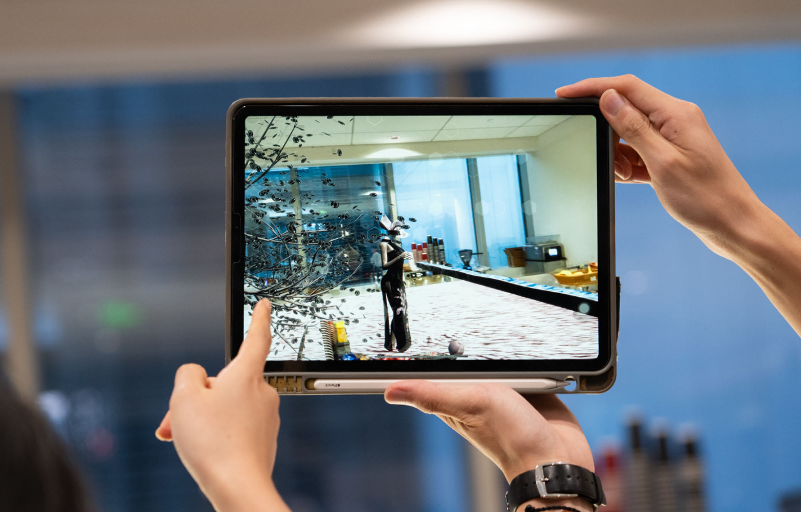

Peach Blossom -Topia
A transformative journey that probes the delicate balance between utopian ideals and the disconcerting realities of life

A transformative journey that probes the delicate balance between utopian ideals and the disconcerting realities of life
Imagine stepping into a digital world inspired by the ancient Chinese tale of "Peach Blossom Spring." This AR game/experience is about challenging traditional ideas of paradise by twisting them into a dystopian nightmare. Players start in a serene peach blossom spring, with nature's beauty all around. Trees are burdened with peaches, and players can pick and eat peaches. But the more peaches they consume, the more the landscape transforms into something dark and unsettling...
Peach Blossom Spring" is a classic Chinese prose poem written by Tao Yuanming during the Jin Dynasty. It tells the story of a fisherman's discovery of a hidden utopian village in a remote valley, where people live in harmony with nature.
The ancient 'Peach Blossom Spring' concept inspires modern phenomena, from idyllic lifestyle videos like Li Ziqi's to urbanites seeking reclusive mountain life for simplicity and urban escape. For those weary of urban life, nature reminiscent of the Peach Blossom Spring serves as a utopian paradise. By exploring the dystopian form of Peach Blossom Spring, we aspire to underscore the nuanced relationship between our idealized visions of paradise and the intricate challenges posed by the modern world.
- Triggered Transformations: User interactions with the peaches trigger experience transformations
- Clue Within the Scene: clue for escaping the dystopian reality hides in the scene - posters, villagers, etc.
- Game Mechanics: Guided exploration & Puzzle solving
- Using MetaScan to scan the floor model of our campus
- Using Vuforia Engine for spacial recognition and tracking